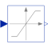

LimiterLimit the range of a signal |

|
Information
This information is part of the Modelica Standard Library maintained by the Modelica Association.
The Limiter block passes its input signal as output signal as long as the input is within the specified upper and lower limits. If this is not the case, the corresponding limits are passed as output.
The parameter homotopyType in the Advanced tab specifies the
simplified behaviour if homotopy-based initialization is used:
NoHomotopy: the actual expression with limits is usedLinear: a linear behaviour y = u is assumed (default option)UpperLimit: it is assumed that the output is stuck at the upper limit u = uMaxLowerLimit: it is assumed that the output is stuck at the lower limit u = uMin
If it is known a priori in which region the input signal will be located, this option can help a lot by removing one strong nonlinearity from the initialization problem.
Parameters (5)
| uMax |
Value: Type: Real Description: Upper limits of input signals |
|---|---|
| uMin |
Value: -uMax Type: Real Description: Lower limits of input signals |
| strict |
Value: false Type: Boolean Description: = true, if strict limits with noEvent(..) |
| homotopyType |
Value: Modelica.Blocks.Types.LimiterHomotopy.Linear Type: LimiterHomotopy Description: Simplified model for homotopy-based initialization |
| limitsAtInit |
Value: true Type: Boolean Description: Has no longer an effect and is only kept for backwards compatibility (the implementation uses now the homotopy operator) |
Connectors (2)
| u |
Type: RealInput Description: Connector of Real input signal |
|
|---|---|---|
| y |
Type: RealOutput Description: Connector of Real output signal |
Used in Examples (3)
|
Modelica.Electrical.Machines.Examples.SynchronousInductionMachines
Test example: PermanentMagnetSynchronousInductionMachine acting as brake |
|
|
Modelica.Magnetic.FundamentalWave.Examples.BasicMachines
Test example: PermanentMagnetSynchronousInductionMachine acting as brake |
|
|
Modelica.Fluid.Examples.DrumBoiler
Complete drum boiler model, including evaporator and supplementary components |
Used in Components (5)
|
Modelica.Blocks.Continuous
P, PI, PD, and PID controller with limited output, anti-windup compensation, setpoint weighting and optional feed-forward |
|
|
Modelica.Blocks.Math
Output the total harmonic distortion (THD) |
|
|
Modelica.ComplexBlocks.ComplexMath
Calculate quantities to plot Bode diagram |
|
|
Modelica.Electrical.PowerConverters.ACDC.Control
Generic control of 2*m pulse rectifiers |
|
|
Modelica.Electrical.PowerConverters.DCDC.Control
Generates a pulse width modulated (PWM) boolean fire signal |